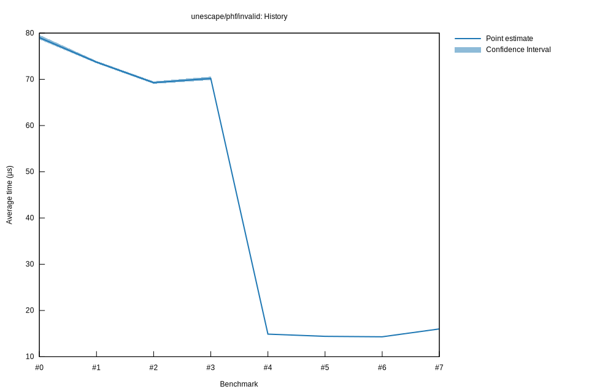

# 52025-10-31T17:49:27-07:00
|
Lower Bound |
Estimate |
Upper Bound |
| Value: |
14.36µs |
14.41µs |
14.46µs |
| Throughput: |
1122.33MiB/s |
1118.39MiB/s |
1114.25MiB/s |
| Change in Value: |
-4.1078% |
-3.3712% |
-2.6091% |
| Change in Throughput: |
+4.2838% |
+3.4888% |
+2.6790% |
No change in performance detected.
# 42025-10-29T22:28:18-07:00
|
Lower Bound |
Estimate |
Upper Bound |
| Value: |
14.83µs |
14.89µs |
14.95µs |
| Throughput: |
1086.63MiB/s |
1082.40MiB/s |
1077.88MiB/s |
| Change in Value: |
-79.029% |
-78.821% |
-78.635% |
| Change in Throughput: |
+376.85% |
+372.17% |
+368.06% |
No change in performance detected.
# 32025-10-29T22:21:43-07:00
|
Lower Bound |
Estimate |
Upper Bound |
| Value: |
69.84µs |
70.19µs |
70.57µs |
| Throughput: |
230.70MiB/s |
229.58MiB/s |
228.32MiB/s |
| Change in Value: |
+0.0060% |
+1.0278% |
+2.0466% |
| Change in Throughput: |
-0.0060% |
-1.0173% |
-2.0056% |
No change in performance detected.
# 22025-10-29T19:46:07-07:00
|
Lower Bound |
Estimate |
Upper Bound |
| Value: |
69.03µs |
69.28µs |
69.56µs |
| Throughput: |
233.44MiB/s |
232.58MiB/s |
231.66MiB/s |
| Change in Value: |
-7.0029% |
-5.8602% |
-4.8373% |
| Change in Throughput: |
+7.5302% |
+6.2250% |
+5.0831% |
No change in performance detected.
# 12025-10-29T19:02:52-07:00
|
Lower Bound |
Estimate |
Upper Bound |
| Value: |
73.47µs |
73.72µs |
73.98µs |
| Throughput: |
219.31MiB/s |
218.59MiB/s |
217.79MiB/s |
| Change in Value: |
-7.4774% |
-6.4826% |
-5.3944% |
| Change in Throughput: |
+8.0817% |
+6.9320% |
+5.7020% |
No change in performance detected.
# 02025-10-26T16:47:10-07:00
|
Lower Bound |
Estimate |
Upper Bound |
| Value: |
78.65µs |
79.03µs |
79.60µs |
| Throughput: |
204.86MiB/s |
203.90MiB/s |
202.42MiB/s |